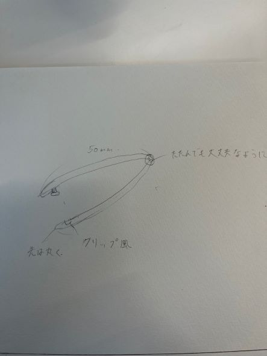
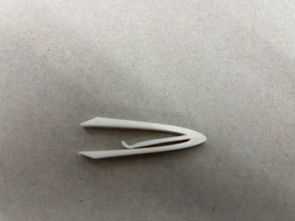

ピンセットの改良
ピンセット
スケッチ

破竹の勢い
最初の構想段階ではこのようにピンセットのままクリップのようにできるようにできたらいいと持っていました。
しかし、fusionの段階でこれではピンセットの機能を果たすことができないと思いました。
そのため、別の方法でクリップできる方法があるのではないかと考えました。
ステンレスクラスプ
なのでこのようにして挟める方式のクリップに変更することにしました。
作品

stlファイル
クリップ＋ピンセット
使い方の動画